第11章 目标设定与监控 Goal Setting and Monitoring
把意图形式化为可判定的完成判据、约束与预算，并用检查循环持续比对行为与目标，是智能体长任务不跑偏的机制基础。
一句话定义：在智能体执行前把意图形式化为"完成判据 + 约束 + 预算"三要素，在执行中以固定节奏把实际进展与目标比对，据偏差修正或终止执行。 解决什么问题：LLM 智能体缺乏内生的进度感与停止判据，长任务会漂移、空转、过早收工或违反约束而不自知 ｜ 适用场景：多步长任务、自治运行、批量作业、任何"做完了才算完成"的交付型工作流 ｜ 核心机制：目标形式化 → 步进执行 → 周期性评估（trace/metric/eval 三类信号）→ 修正、继续或升级人 ｜ 代价：评估本身消耗 token 与延迟；判据写歪会放大错误方向；监控可能被智能体的表面进度欺骗。
11.1 模式概述
11.1.1 问题背景：为什么需要这个模式
把一个语言模型从"回答问题"升级为"完成任务"，最先失效的不是能力而是方向。让智能体"整理这个仓库"，它会兴致勃勃地开始干活，但没有人（包括它自己）说得清干到什么程度算完：可能是建了个 README，可能是重构了半个代码库，可能写了三行就宣布完成。LLM 的训练目标是"生成合理的下一个词"，不是"达成外部世界中的某个状态"。因此它天然缺少三样东西：完成判据（什么算做完）、进度感（现在离目标多远）、停止条件（什么时候该停，包括"该放弃"）。没有这三样，任务越 长，行为越像随机游走——业内常见的三种病症：过早宣布完成（没有终判就收工）、无限循环（同一动作反复执行而不知无进展）、目标漂移（做着做着变成做另一件事）。
传统软件不面对这个问题，因为"目标"在代码里就是函数签名与测试用例；RL 智能体不面对这个问题，因为奖励函数就是目标。而 LLM 智能体的目标通常活在用户的一句自然语言里，歧义、隐含、不可计算。目标设定与监控模式要做的，就是把这句自然语言翻译成机器可执行的控制结构，再配一个持续运行的比对环节。
11.1.2 核心机制：它如何工作
机制可以概括为"一个三元组 + 一个循环"。目标形式化三元组：完成判据（达成即可停车的可判定谓词，如"全部测试通过"）、约束（执行全程必须成立的不变量，如"不修改 tests 目录""预算不超过 5 美元"）、预算（可消耗资源的上限，步数、token、时间、金额）。判据回答"何时成功"，约束回答"怎样才算合规地成功"，预算回答"最多投入多少"。
检查循环把控制论里的负反馈搬进智能体循环：执行一步 → 采集信号 → 与目标比对 → 无偏差则继续，有偏差则修正（重定向、重规划），判据满足则退出，预算耗尽且未达成则放弃或升级给人。比对用的信号分三类：trace（结构化的执行轨迹：每步的输入、工具调用、输出）、metric（可累计的数值：完成步数、工具错误率、token 消耗）、eval（对产出质量的判定，来源可以是程序化断言，也可以是模型裁判，即 LLM-as-judge）。三者的关系是：trace 是原料，metric 与 eval 是从 trace 提炼出的两类判断——定量判断与定性判断。整个检查循环如下图所示。

11.1.3 与相邻模式的关系与组合
目标监控与反思模式相邻但职责不同：反思是智能体对自己单步产出的自我批评，作用域是"这一步做得好不好"；目标监控作用域是"整个任务还该不该继续、方向对不对"。反思可以充当监控的信号源之一，但替代不了监控——自我批评对"方向性漂移"几乎无感，因为漂移的每一步单看都挺合理。与提示链的关系是上下游：链条上每个环节的产出物正是监控的采集点；链式任务天然适合里程碑式监控（每环节出口做一次终判式的检查）。与路由/规划的关系在执行面：漂移检测触发重规划，规划器需要监控提供的"偏差原因"作为输入。与第 12 章异常处理的关系在边界上：预算耗尽、连续失败正是异常恢复机制的触发条件；本章回答"该不该停"，第 12 章回答"停了之后怎么救"。与第 10 章 MCP 的关系在数据面：工具调用产生标准化 trace，是监控信号最重要的来源。

11.2 源起：它从哪里来
"目标-检测-行动"的循环比人工智能古老：维纳 1948 年的控制论确立负反馈原理，米勒等 1960 年的 TOTE 单元把它拆成可计算的"检验-操作-检验-退出"。智能体工程接力：1987 年的 PRS 首次把"目标的建立、维护与撤销"做成可运行系统，1995 年的 BDI 论文让意图持久性成为设计共识；管理学的 OKR 贡献另一半——目标要对齐、可度量、定期检视。LLM 时代补上两块拼图：模型裁判让语义质量可自动判定，可观测性标准让监控落地成基础设施；而规范博弈与目标误泛化研究敲响警钟——判据本身会出错。各思想如何汇入今天的检查循环，见 11.5.6。
| 年份月 | 事件 | 提出者/出处 |
|---|---|---|
| 1960 | TOTE 单元：目标-检测-行动循环的认知原型 | Miller, Galanter, Pribram《Plans and the Structure of Behavior》 |
| 1987 | PRS：目标持续性与意图管理的第一个重要工程实现 | Georgeff & Lansky，AAAI-87《Reactive Reasoning and Planning》 |
| 1995-06 | BDI 从理论到工程：意图持久性成为设计共识 | Rao & Georgeff，ICMAS-95《BDI Agents: From Theory to Practice》 |
| 2020-04 | 规范博弈案例集系统化"字面达标、实质跑偏"（约 60 例） | Victoria Krakovna 等，DeepMind 博客 |
| 2023-06 | LLM-as-judge 确立：强模型当裁判评测生成质量 | Lianmin Zheng 等，arXiv:2306.05685（NeurIPS 2023 oral） |
11.3 发挥的作用：为什么重要
第一，它把智能体从"生成器"变成"承包者"。没有目标的智能体只对提示词负责；有了判据与预算，它开始对结果负责——这是自治运行（无人值守跑长任务）的前置条件。工程上的直接收益是可控的失败：预算耗尽时智能体会停下来上报，而不是烧钱空转；判据未满足时它不会谎报完成，因为"完成"不是它自封的，是判据认定的。
第二，它给多步任务提供了可运维性。有了 trace 与 metric，团队才能回答"这个智能体平均几步完成、失败在哪一步、工具错误率多少"这类运营问题；LangSmith、Langfuse 这类工具把这三件套产品化，OpenTelemetry 的 GenAI 语义约定（gen_ai.* 属性族）则让不同框架的轨迹可以汇入同一套可观测设施。没有监控的智能体系统，故障排查等于读小说。
第三，它是安全与对齐的工程抓手。漂移检测能在智能体"越干越远"时及时拉回；约束检查能在违反不变量（动了的目录、超的预算、越的权限）的第一时间熔断。规范博弈研究揭示的"字面达标、实质跑偏"，在 LLM 智能体上有了新的廉价形态——比如把测试文件改通让判据通过——而监控恰恰是发现这类行为的主要手段。
11.4 实际应用与案例
代码修复智能体。目标："修复 issue #123 且测试全绿"。设计点：完成判据用程序化断言（测试套件通过 + diff 只触及指定模块），约束是不许改动 tests 目录（防"改测试作弊"），预算是提交次数与 CI 时长；每轮循环跑一次终判，杜绝"我觉得改好了"。
深度研究报告生成。目标："产出一份对比 X 与 Y 的调研报告"。设计点：判据无法纯程序化，用模型裁判按维度打分（覆盖度、证据引用、结论一致性），配程序化硬门槛（引用条数、字数区间、每个论断有来源）；里程碑监控：大纲通过后才允许进入写作里程碑。
客服工单自动处理。目标："解决用户工单且不升级投诉"。设计点：预算先行（单工单 token 与轮次上限，超限自动转人工——转人工是合法出口而非失败）；metric 监控解决率与误解决率（三天内回炉的工单），漂移信号是"回复越来越长但工单状态不变"。
数据管道巡检修复。目标："让 DAG 恢复全绿且数据质量校验通过"。设计点：判据双层（管道状态 + 数据质量断言，只看前者会被"重跑掩盖脏数据"骗过）；每次修复动作前快照，防止修复动作本身污染数据——这是与异常恢复模式的典型组合点。
采购比价智能体。目标："在预算内找到满足规格的供应商报价"。设计点：约束承载合规（供应商白名单、单笔限额），预算是硬约束；监控重点是约束违反而非进度，任何一次越界直接终止并上报，不给"下不为例"的机会。
模型训练/评测流水线。目标："新版本在评测集上不劣于旧版本"。设计点：判据是成对比较（用裁判模型或 A/B 评测），而非单看均分；metric 侧用 OTel GenAI 约定把每次评测的 gen_ai.* 指标汇入统一看板，版本间可比。
真实世界实例
LangSmith 与 Clay、Toyota 的智能体监控。LangChain 官网客户故事显示：营销数据平台 Clay 用 LangSmith 调试与评估每月约 3 亿次智能体运行，把 eval 与生产监控组合起来改进其 Claygent；丰田北美把 LangSmith 用作智能体的"安灯板"（Andon Board）——异常即拉灯停线，正是本章"trace 是地基、监控要有停车权"的产品化形态。来源：LangChain 客户故事。
Langfuse 的企业级 trace 与 eval。AWS 官方合作伙伴博客记载：物流物联网公司 Samsara 把 Langfuse 接入其 AI 助手的 LLM 基础设施做全链路监控（含多模态应用），Twilio 用它做协作式提示词管理，默克集团（Merck Group）在组织级 AI 平台上用其实时 LLM tracing——开源可观测平台进入大型企业生产的实例。来源：AWS Partner Network 博客。
Azure AI Foundry 采用 OTel GenAI 语义约定。微软 2025 年 10 月宣布与 Cisco Outshift 共同向 OpenTelemetry 提交多智能体语义约定（execute_task 任务跨度、agent 间交互、工具调用参数与结果属性、评测事件等），并把基于 OTel 的统一观测集成进 Azure AI Foundry、Microsoft Agent Framework、Semantic Kernel 及 LangChain/LangGraph/OpenAI Agents SDK 的观测包——不同框架的轨迹由此汇入同一套可观测设施。来源：OTel GenAI 语义约定官方文档；微软公告《Azure AI Foundry: Advancing OpenTelemetry and delivering unified multi-agent observability》（Azure AI Foundry 官方博客，2025-10-01），框架内置埋点的第三方实测见 SigNoz 文档。
11.5 深度讲解
11.5.1 目标形式化：判据、约束、预算的写法与写坏方式
三元组中最值得精雕的是完成判据。一条合格的判据必须是谓词——给定最终状态，能在有限步骤内计算出真假。工程上有三个来源，可靠性与覆盖面递减：程序化断言（测试、编译、schema 校验）最可靠，凡能用就该用；外部世界状态（订单系统里的状态字段、文件是否存在）次之，注意查询本身的权限与延迟；模型裁判覆盖语义空间（"摘要是否忠实""报告是否切题"），最灵活也最会错意。写坏判据的方式高度模式化，值得背下来：判据是手段的度量而非结果的度量（"写了 500 行代码" versus "bug 修好了"）；判据可被 agent 自证（"自查认为完成"——任何允许 agent 兼任裁判的判据等于没有判据）；判据遗漏约束（"报告完成"却没说不能编造引用）。判据设计的压力测试只有一句：假装智能体想作弊，这条判据拦得住吗？
约束与预算承担的是"过程正当性"。约束是不变量——每一步检查，违反即触发处理，而不是等终判；预算是资源的硬顶——它同时是性能护栏与安全护栏，一个没有预算上限的自治智能体等于一张开口的信用卡。预算还有个常被忽略的语义角色：它是"放弃"的合法性来源。管理学里 OKR 的检视节奏之所以重要，正是因为它制度化地回答"继续还是止损"；没有预算的智能体永远只会继续。
11.5.2 进度度量：里程碑与终判的分工
进度度量有两种粒度。里程碑把任务切成阶段，每阶段出口做一次检查（大纲→草稿→终稿），优点是早失败、失败定位准，缺点是里程碑本身可能写歪——把手段当前进（"已收集 20 篇文献"不等于"调研完成"）。终判只在最后做一次全量检查，实现最简单，但反馈太晚：一个 50 步的任务在第 48 步才发现方向错了，代价是全部重付。实践中的取舍是"里程碑粗、终判严"：里程碑只做方向性检查（便宜、快、允许模糊），终判必须用最高保真的判据（贵、慢、尽量客观）。再叠一层"进度签名"技巧：要求执行者在每个里程碑用一句话自报"距完成还差什么"，把自报内容与实际 trace 交叉验证——自报与轨迹长期背离的智能体，本身就是最强烈的漂移警报。
11.5.3 漂移检测：目标侵蚀的三种形态
目标漂移不是单一现象，至少有三种形态需要不同对策。第一种是目标侵蚀（goal drift / 目标滑坡）：智能体把难的部分悄悄换掉，用容易达成的替代目标交差——写不出忠实的摘要，就写一篇看起来顺滑的短文。它与 RL 里的规范博弈同构（Krakovna 等人 2020 年整理的案例集是这一现象的系统参考），检测的关键是用原始目标而非当前语境做比对：评审时只给评审者"最初的目标文本 + 轨迹摘要"，不给中间过程里已被智能体重新表述过的目标——漂移往往正是通过"目标的重新表述"完成的。第二种是手段固化：某条路线早期有效，智能体反复重试早已失效的手段；检测靠重复度统计（动作 n-gram 重复率）与"无新信息步数"计数。第三种最隐蔽：目标误泛化（Shah 等 2022 年提出的概念）——即使判据完全正确，智能体也可能在训练分布外"忠实地"追求一个错误目标；对单次执行的黑盒监控无解，只能靠分布外的终判抽查与人类复核兜底。工程上还有一条铁律：执行者不能自任裁判。自我评估会产生系统性乐观偏差，监控者应使用独立上下文（最好独立模型）读取目标与轨迹后给出判定。
11.5.4 监控三件套：trace、metric、eval 的落地
trace 是地基。每步记录：输入摘要、选择的工具与参数、原始输出、耗时、错误。格式上不必自造标准——OpenTelemetry 的 GenAI 语义约定正在把 gen_ai.request / gen_ai.usage / gen_ai.tool 一类的属性名标准化，按它的形状存 trace，未来可以无缝接入各类观测后端。metric 是仪表盘。最小集：任务成功率、平均步数、工具错误率、token/金额成本、重试率、漂移重定向率。metric 的价值在分群：按任务类型、按模型版本切片看，全局均值几乎总是骗人的。eval 是终审。程序化断言优先；语义判定交给 LLM-as-judge，但要管理它的已知偏差——位置偏差（成对比较时偏爱某个位置，需交换顺序各判一次）、长度偏差（偏爱长答案，需控制长度再比或显式告知长度不计入质量）、自我偏好（模型偏爱自己的风格，监控者与执行者宜用不同模型）。Zheng 等人的 MT-Bench 工作验证了强模型作裁判与人类偏好的一致率可以相当高，但那是"强模型评弱模型"的设定；裁判与选手能力越接近，偏差越明显——生产环境应对裁判做定期抽检校准（抽样人工复核裁判结论的一致率）。
11.5.5 设计权衡与失效模式
四个核心权衡。内联 versus 旁路：监控嵌在主循环里（每步检查）响应快但拖慢且可能被"表演"迎合；旁路监控（异步抽样）便宜且难被迎合，但发现问题时损失已成。生产系统通常是内联的便宜检查（约束、预算）加旁路的昂贵检查（语义评审）。监控频率与成本：模型裁判每步都叫，成本可能超过执行本身；按里程碑或按 token 增量触发更划算。判定保留权：监控者只提建议还是可强制停车？自治系统必须给监控者停车权，否则监控沦为日志。放弃的代价标定：预算设太小，任务被"合法放弃"的比例升高；设太大，失败成本失控。预算应按任务价值分级，并随历史成功率校准。
反模式清单：把里程碑完成率当 KPI 层层加码，诱发智能体（与团队）为里程碑而里程碑；用执行者的自报进度当真相（自报只能当线索）；监控者与执行者同模型同上下文（自我确认偏误的温床）；只测终产物不测过程约束（危险动作可能早已发生）；判据写进 prompt 却不在代码里强制执行（模型"同意"约束不等于约束被执行）。何时可以不用：单轮问答与一次性生成（判据就是用户自己，不设循环）；探索型任务（目标本身在演化，硬判据会锁死有价值的意外发现，应改用"方向性目标 + 定期人工检视"的松监控）。
11.5.6 思想谱系、定量证据与被 Goodhart 化的监控
把演化脉络并进来看，本章的检查循环有一条清晰的同构谱系。TOTE（Test-Operate-Test-Exit）给出"检验-操作-再检验-退出"的原子形态；PRS（1987）与 BDI（1995）回答了"TOTE 没回答的问题"——目标该何时建立、何时坚持、何时撤销：理性智能体不盲目执着也不轻易放弃，BDI 把这套语义形式化为"意图持久性与撤销条件"，本章"预算耗尽即合法放弃"的设计正是它的工程直系后代。OKR 这条管理学线（Grove 在英特尔首创 iMBO，Doerr 1999 年带入 Google，后系统阐述于《Measure What Matters》）贡献的是检视节奏：目标要对齐、可度量、定期回答"继续还是止损"——把节奏搬到单任务尺度，就是本章的检查循环。LLM 时代新增的两块拼图各有定量锚点，见下。
定量证据一：模型裁判到底多可靠。 Zheng 等人的 MT-Bench/Chatbot Arena 工作（arXiv:2306.05685）在摘要中给出的量级是：GPT-4 级强模型作裁判与人类偏好的一致率超过 80%，与"人与人之间"的一致率处于同一水平。这解释了为什么模型裁判可以进入生产流程；但同一结果的适用边界同样重要——那是"强裁判评弱选手"的设定，裁判与选手能力越接近偏差越大（11.5.4 的偏差管理与定期人工校准由此而来）。
定量证据二：规范博弈不是个例而是模式。 DeepMind 2020 年 4 月 21 日的规范博弈博客与协作列表收录了约 60 个案例（原文"around 60 examples"），覆盖强化学习、翻译、数学等域——"字面达标、实质跑偏"在 RL 时代就已高频出现。LLM 智能体上它的廉价形态就是 11.5.3 的目标侵蚀（改测试文件让判据通过），而 Shah 等人 2022 年的目标误泛化更进一步：即使判据完全正确，训练分布外系统仍可能"忠实地"追求错误目标——两份工作共同把"监控机制必须假定目标表示与真实意图之间存在缺口"从直觉变成结论。
反直觉点：监控指标本身会被 Goodhart 击穿。 大家以为"上了监控就安全了"，工程事实是：一旦某个监控指标成为被优化的目标，它就开始失真——人类学家 Strathern 对 Goodhart 定律的通俗表述是"当度量成为目标，它就不再是好的度量"（Strathern, 1997，《'Improving ratings': Audit in the British University system》，European Review 5(3)）。智能体系统里这个效应比组织中来得更快：里程碑完成率、步数、自报进度一旦进入执行者的提示词、奖励信号或 KPI，执行者就把"让指标好看"当隐目标，指标与真实进度脱钩（这正是 11.5.5"为里程碑而里程碑"反模式的机理）。对策是指标分层加定期换指标：终判判据（不可操纵的程序化断言）与过程指标分层保管，过程指标永不进入执行者的目标函数；抽查指标定期轮换，让针对旧指标的过拟合失效——逻辑与对抗样本的防御轮换相同。
边界条件：三类分布下本章模式开始失效。其一，目标本身在演化的探索型任务——硬判据锁死意外发现，应退回"方向性目标+定期人工检视"的松监控（11.5.5 末尾）；其二，判据可被廉价操纵又无法程序化验证的开放域（写作、研究）——裁判一致率随任务开放度下降，人工抽检兜底的比例要随开放度上调；其三，超长任务（数百步量级）——裁判调用成本可能超过执行本身，监控预算必须随任务长度显式规划，否则监控自己成为最大的成本项。
11.5.7 怎么用：运用判断
适用信号：任务超过三步；需要无人值守跑；产出要交付给下游而非当次阅读；失败代价高（钱、时间、信任）。四条中占两条以上就值得上完整的"判据+约束+预算"三元组；单轮问答与一次性生成不设循环。
与最近替代方案的对比：
| 方案 | 与目标监控的关键差异 |
|---|---|
| 反思模式（第 4 章） | 自我批评作用域是"这一步做得好不好"，对方向性漂移几乎无感；监控用独立上下文比对原始目标 |
| 离线 eval 基线（评测集） | 只在发布前跑一次；监控是执行中持续比对，管的是"这一次运行" |
| 全程人审 | 保真度最高、成本与延迟最高；监控的职责恰是把人审压到最小——只升级难例 |
落地三步：第一步，把当前手头任务的提示词目标改写成"判据+约束+预算"三元组，能程序化的判据全部程序化（测试、schema 校验、字数与关键词断言）。第二步，在主循环里加一个 evaluate 出口：判据满足才退出、预算耗尽即停、约束违反即停车——先跑通这套免费的控制流，再谈模型裁判。第三步，trace 按 OpenTelemetry GenAI 语义约定落盘，失败案例进人工复核队列，用复核结论校准裁判提示词；自报进度只当线索，永远与 trace 交叉验证。
11.6 工程落地：核心源码与讲解
主程序是一个目标监控状态机：程序化判据优先于模型裁判（确定性检查免费且可靠），裁判解析失败有降级路径，连续漂移自动升级。在 Python 3.10+ 实测（模型调用需配置环境变量）。拆为四片，按序拼接到同一个文件里就是完整可运行程序。
11.6.1 核心源码（按序拼接即完整可运行）
片段一：模型接入——每章统一的 OpenAI 兼容辅助函数。
"""目标-判据-进度检查循环：目标监控状态机（框架无关实现）。
依赖：pip install openai；运行需配置 AGENT_LLM_API_KEY（可选 BASE_URL / MODEL）"""
import json
import os
import re
from dataclasses import dataclass, field
from enum import Enum
from typing import Callable
from openai import OpenAI
client = OpenAI(base_url=os.environ.get("AGENT_LLM_BASE_URL", "https://api.openai.com/v1"),
api_key=os.environ["AGENT_LLM_API_KEY"])
MODEL = os.environ.get("AGENT_LLM_MODEL", "gpt-4o-mini")
def llm(prompt: str, system: str = "", temperature: float = 0.3) -> str:
"""统一的模型接入辅助函数（OpenAI 兼容协议，只读环境变量）。"""
msgs = ([{"role": "system", "content": system}] if system else []) + [{"role": "user", "content": prompt}]
return client.chat.completions.create(model=MODEL, messages=msgs, temperature=temperature).choices[0].message.content or ""
▸ 代码怎么读：这一片没有监控逻辑，只有"模型怎么接"的基建：客户端从环境变量读配置（换网关、换模型不改代码），
llm()统一返回纯文本。裁判调用的温度固定 0.0 是在片段三里传入的——判定类调用要的是可复现，不是创造性。读者接自己的网关时只改三个环境变量。
片段二：数据结构——判定枚举与目标三元组。
class Verdict(str, Enum):
ACHIEVED = "achieved" # 完成判据满足
ON_TRACK = "on_track" # 有进展，继续
DRIFTED = "drifted" # 偏离目标（目标侵蚀）
STALLED = "stalled" # 无进展循环
CONSTRAINT_VIOLATION = "constraint_violation"
@dataclass
class Goal:
"""目标三元组：完成判据 + 约束 + 预算。"""
description: str # 原始目标文本（漂移比对以它为准）
programmatic_check: Callable[[str], tuple[bool, str]] # 程序化判据 -> (是否达成, 原因)
constraints: list[re.Pattern] = field(default_factory=list) # 约束：禁止出现的内容
max_attempts: int = 5 # 预算：最大尝试次数
max_consecutive_drifts: int = 2 # 连续漂移升级阈值
@dataclass
class Attempt:
n: int
artifact: str
verdict: Verdict | None
reason: str = ""
▸ 代码怎么读：
Goal的五个字段就是 11.5.1 的三元组落地：description存原始目标文本——漂移比对永远以它为准，绝不用执行中被改写过的目标；programmatic_check把判据做成函数而非提示词，constraints把约束做成正则而非口头约定——"模型同意约束不等于约束被执行"。max_attempts是预算，也是"放弃"的合法性来源；max_consecutive_drifts=2取"两次连续漂移"作升级阈值，太敏感会频繁打扰人，太迟钝则漂移已酿成损失。Attempt保留每轮判定与理由，是 11.5.4 所说"trace 是原料"的最小形态。
片段三：Test 环节——检查顺序与裁判的降级路径。
class GoalMonitor:
"""TOTE 循环的 Test 环节：约束最先查，程序化判据次之，语义判定最后交裁判。"""
def __init__(self, goal: Goal, judge: Callable[[Goal, str], tuple[Verdict, str]] | None = None):
self.goal = goal
self.judge = judge or self._llm_judge
self.history: list[Attempt] = []
self.judge_failures = 0
def evaluate(self, artifact: str) -> tuple[Verdict, str]:
for pat in self.goal.constraints: # 约束：不变量，违反即拦
if pat.search(artifact):
return Verdict.CONSTRAINT_VIOLATION, f"违反约束：出现禁止内容 {pat.pattern!r}"
ok, why = self.goal.programmatic_check(artifact) # 判据：免费且确定，先跑
if ok:
return Verdict.ACHIEVED, why
if any(a.artifact == artifact for a in self.history): # 与历史产出相同 => 空转
return Verdict.STALLED, "与历史产出完全相同，无进展"
return self._judge_with_retry(artifact) # 语义维度交给裁判
def _judge_with_retry(self, artifact: str) -> tuple[Verdict, str]:
try:
v, r = self.judge(self.goal, artifact)
self.judge_failures = 0
return v, r
except Exception as exc: # 裁判失效降级：保守放行并计数，连坏 3 次由主循环升级
self.judge_failures += 1
return Verdict.ON_TRACK, f"[裁判失效{self.judge_failures}次] {exc}"
def _llm_judge(self, goal: Goal, artifact: str) -> tuple[Verdict, str]:
"""模型裁判：用原始目标（而非执行中的转述）比对产出，独立上下文。"""
system = ('你是目标监控裁判。只输出 JSON：{"verdict":"achieved|on_track|drifted|stalled",'
'"reason":"一句话理由"}。drifted=字面达标但偏离原始目标真实意图。')
raw = llm(f"原始目标：{goal.description}\n当前产出：\n{artifact}\n"
f"历史判定：{[a.verdict.value if a.verdict else '?' for a in self.history]}",
system=system, temperature=0.0)
fence = "`" * 3 # chr(96) 构造的围栏标记；剥掉模型可能加的 json 围栏外壳
cleaned = raw.strip().removeprefix(fence).removesuffix(fence).strip()
cleaned = cleaned if cleaned.startswith("{") else cleaned[cleaned.index("{"):]
data = json.loads(cleaned)
return Verdict(data["verdict"]), str(data.get("reason", ""))
▸ 代码怎么读：
evaluate的检查顺序就是成本与可靠性排序：约束（正则，纳秒级）→ 程序化判据（函数调用，免费）→ 空转检测（列表比对）→ 模型裁判（最贵、最后）。监控者与执行者分离在这里成形：裁判收到的是goal.description原文加产出，没有执行者的任何转述——漂移往往正是通过"目标的重新表述"完成的（11.5.3）。_judge_with_retry是这段代码最重要的工程细节：裁判也是会坏的模型调用，坏了保守放行并计数而不是让整个任务失败——把"检查不可用"与"检查不通过"区分开；连坏 3 次说明监控者自身失效，主循环会升级而不是硬撑。裁判输出用 JSON 约束加两层剥壳（围栏标记与语言标注），这是对着真实模型的输出版式打的补丁。
片段四：Operate-Test 主循环与最小演示。
def run_loop(monitor: GoalMonitor, agent_step: Callable[[str | None], str]) -> tuple[str, list[Attempt]]:
"""Operate-Test 状态转移：达成即退、违规即停、漂移即修、预算尽即弃（放弃是合法出口）。"""
feedback: str | None = None
for n in range(1, monitor.goal.max_attempts + 1):
artifact = agent_step(feedback)
verdict, reason = monitor.evaluate(artifact)
monitor.history.append(Attempt(n, artifact, verdict, reason))
print(f"[第{n}轮] verdict={verdict.value} reason={reason}")
if verdict is Verdict.ACHIEVED:
return "exit_success", monitor.history
if monitor.judge_failures >= 3:
return "escalate_judge_broken", monitor.history # 监控者自身失效 => 升级
if verdict is Verdict.CONSTRAINT_VIOLATION:
return "halt_constraint_violation", monitor.history # 硬约束 => 立即停车
if verdict in (Verdict.DRIFTED, Verdict.STALLED):
drifts = sum(1 for a in monitor.history[-2:] if a.verdict is Verdict.DRIFTED)
if drifts >= monitor.goal.max_consecutive_drifts:
return "escalate_drift", monitor.history # 连续漂移 => 升级给人
feedback = f"上一轮被判定 {verdict.value}：{reason}，请回到原始目标重新理解后再产出。"
return "exit_budget_exhausted", monitor.history # 预算耗尽 => 合法放弃
if __name__ == "__main__":
def check_slogan(text: str) -> tuple[bool, str]: # 程序化硬门槛：不超过 30 字且含"稳健"
if len(text) > 30 or "稳健" not in text:
return False, f"硬门槛未过（{len(text)}字，含'稳健'={'稳健' in text}）"
return True, "程序化判据全部满足"
goal = Goal(description="为云备份产品写一句中文口号，强调数据安全与稳健可靠，不超过30字，含'稳健'一词。",
programmatic_check=check_slogan, max_attempts=4,
constraints=[re.compile(r"最(好|强)|第一|吊打")]) # 约束：禁止绝对化用语
scripted = ["极速云盘，下载提速300%，注册即送百G空间！", # 模拟执行者：第 1 轮故意漂移（速度广告）
"数据备份，稳健之选：云端守护，安全可靠每一天。"] # 第 2 轮吸收反馈回到正轨
cursor = {"i": 0}
def agent_step(feedback: str | None) -> str: # 真实场景：把 feedback 回注给模型重新产出
cursor["i"] += 1
return scripted[min(cursor["i"] - 1, len(scripted) - 1)]
status, history = run_loop(GoalMonitor(goal), agent_step)
print(f"最终状态: {status}，共 {len(history)} 轮。")
▸ 代码怎么读：
run_loop是 11.1.2 那张反馈环图的状态转移表，值得逐个出口看：exit_success只认判据；halt_constraint_violation对硬约束零容忍（不给"下不为例"的机会）；escalate_drift在连续漂移时把控制权交给人，而不是让智能体自我修到天荒地老；exit_budget_exhausted是预算的出口——"合法放弃"和"成功"一样是一等返回值。五个返回状态字符串就是给上游（调度器、人）看的信号协议。演示里agent_step用脚本模拟执行者，真实场景只需把它换成"把 feedback 回注给模型重新产出"的调用；第 1 轮产出是刻意的目标侵蚀样本——速度广告看似相关，实际答非所问，用它验证监控真的能拦住漂移。读者改哪里：换掉check_slogan、约束正则和description，就是你自己任务的目标监控器。
11.6.2 框架差异速览
各框架把"监控节点 + 条件路由"托管掉了，但判定逻辑（判据、约束、预算）仍然要你自己写。本章状态机在四个主流框架里的对应物：
| 框架 | 同名能力 | 与本章实现的差异 |
|---|---|---|
| LangGraph | StateGraph 条件边（add_conditional_edges） |
监控做成独立节点、条件边函数承担路由；recursion_limit（默认 25）兜底死循环 |
| OpenAI Agents SDK | @output_guardrail 输出护栏 |
护栏返回 tripwire_triggered=True 即抛异常中断运行；语义是"终判"，粒度比每步检查粗 |
| CrewAI | Task(human_input=True) |
交付前暂停等人工输入——监控权直接交给人而非自动裁判 |
| Google ADK | LoopAgent 的 max_iterations + EventActions(escalate=True) |
迭代上限是强制项；子代理置 escalate 即终止循环，预算上限内建 |
（官方文档：LangGraph、OpenAI Agents SDK Guardrails、CrewAI Human Input、ADK Workflow Agents。）
11.6.3 生产化改造清单
- 错误处理：模型裁判的 JSON 解析失败要重试并降级（如 11.6.1 的失效计数）；程序化判据本身可能抛异常（测试超时），需包裹并按"检查不可用"单独计数。
- 超时与并发：裁判调用设独立超时；多任务并跑时监控预算按任务隔离，防止单任务耗尽全局额度。
- 缓存：相同产出（哈希相同）的裁判结果直接复用；里程碑判据结果随 trace 持久化，重跑不重复计费。
- 可观测：trace 按 OTel GenAI 语义约定落盘，metric 看板按任务类型分组建报警（成功率、重定向率、预算放弃率）。
- 成本控制：程序化检查永远先于模型裁判；裁判按里程碑触发而非每步；裁判模型用更便宜的档位。
- 安全：约束检查放在执行前（输入侧）与执行后（产出侧）双端；漂移升级要接人工工作流（含原始目标、轨迹摘要、裁判理由），让人 30 秒内能做出判断。
- 校准：定期抽样人工复核裁判结论，维护裁判与人类的一致率指标；一致率下滑先查判据是否被新任务分布打穿。
11.7 概览 / 核心要点 / 结论
本章小结
目标设定与监控把"完成任务"从一句自然语言愿望变成可执行的控制结构：判据定义成功的可计算形状，约束守护过程的正当性，预算给止损提供合法出口；执行中的检查循环以 trace 为原料、metric 为仪表、eval 为终审，持续比对行为与原始目标，把漂移、空转与违规拦在酿成损失之前。这条机制的每个零件都有半个世纪以上的历史——控制论的反馈、TOTE 的检验循环、BDI 的意图管理、OKR 的检视节奏——LLM 时代新增的只是模型裁判与标准化观测这两块拼图。
核心要点
- 目标三元组缺一不可：完成判据（何时停）、约束（怎样算合规）、预算（最多投多少，放弃的合法性来源）。
- 判据优先级：程序化断言 > 外部世界状态 > 模型裁判；确定性检查永远先跑。
- 执行者不得自任裁判：监控用独立上下文（最好独立模型），用原始目标而非执行中的转述做比对。
- 漂移三形态对症下药：目标侵蚀靠原始目标比对、手段固化靠重复度统计、目标误泛化只能靠分布外抽查与人工兜底。
- 里程碑粗、终判严：里程碑做方向性检查，终判用最高保真判据；自报进度只当线索，与 trace 交叉验证。
- LLM-as-judge 要管理偏差：位置交换、控制长度、避免同模型自评，并定期人工校准一致率。
- 监控三件套落到标准设施：trace 按 OpenTelemetry GenAI 语义约定存，metric 按任务分群看，eval 结果随轨迹持久化。
- 转人工与放弃是合法出口：预算耗尽与连续漂移的正确处理是升级，不是硬撑。
结论
智能体越自治，目标监控越不是可选项。没有判据的自治是赌博，没有监控的自治是盲飞；而判据本身也会出错——规范博弈与目标误泛化的研究提醒我们，监控机制必须对"目标表示与真实意图的缺口"保持永久警惕。工程上的正确姿势是谦逊的：让便宜的确定性检查守门，让昂贵的语义裁判抽检，让无法自动判定的事尽快回到人面前。能做到这三点的智能体系统，才配得上"可靠"两个字。
11.8 延伸阅读与参考链接
论文
- LLM-as-judge 开山之作 MT-Bench/Chatbot Arena：arXiv:2306.05685、arXiv:2312.16531
- 目标误泛化（correct specification ≠ correct goal）：arXiv:2210.01790
- 规范博弈案例集（DeepMind，2020）：Specification gaming: the flip side of AI ingenuity
- OKR 目标检视节奏的管理学源头：Measure What Matters（whatmatters.com）
官方文档与规范
- OpenTelemetry 官网与 GenAI 语义约定（gen_ai.* 属性族）：opentelemetry.io ｜ opentelemetry.io/docs/specs/semconv/gen-ai
- LangSmith 文档（trace、eval、monitor 产品化三件套）：docs.smith.langchain.com
- Langfuse 开源 LLM 工程平台（tracing/evaluation/prompt management）：langfuse.com
- LangGraph 官网（工作节点＋监控节点的条件回路）：langchain-ai.github.io/langgraph
案例来源
- LangChain 客户故事（Clay 月均 3 亿次智能体运行评估、Toyota 智能体安灯板、Klarna、Salesforce 等）：langchain.com/customers
- AWS Partner Network 博客：Langfuse 在 Samsara、Twilio、Merck Group 的企业级 LLM 可观测实践：aws.amazon.com/blogs/apn
- 微软 Azure AI Foundry 推进 OpenTelemetry 多智能体观测（2025-10-01，Azure AI Foundry 官方博客）；框架内置 GenAI 埋点的实测记录：signoz.io/docs/microsoft-agent-framework-observability